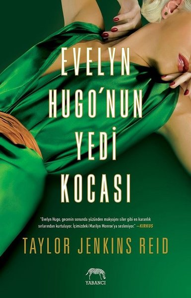

HOLLYWOOD'UN GÖZDESİ EVELYN HUGO
BA-YIL-DIM. Tek kelimeyle bayıldım. Bitsin istemedim, kitap 430 sayfadı ama bir 430 sayfa daha olsa seve seve okurdum. Yabancı yayınevinin yeni gözdesi olan bu kitabı zaten her yerde görüyordum ben de bekletmeden okumak istedim. Kesinlikle beklentilerime değdi. Yazarın kalemini o kadar sevdim ki! İlk sayfadan itibaren kitabın içinde hissettim. Evelyn’i anladım, bazen ona kızdım, bazen çok üzüldüm. Hikaye o kadar gerçekti ki kitabın sonunda sanki onu tanıyormuşum gibi hissettim. Şöhretin dışarıdan gözüktüğü gibi büyülü olmadığını fark ettim. Evelyn muhteşem güçlü bir karakterdi. İstediklerini elde etmek için yanlış seçimler de yapsa bunu kabul eden, amacına ulaşmak için çoğu şeyi araç olarak kullanan ve bunun farkında olan, insanları manipüle edebilen, zeki...
Her şeyiyle sevdim. Acısını, pişmanlığını, bencilliğini hissettim. Yazar başından beri bir gizemde koymuştu kurguya. Aslında bir iki ipucunu kaçırmazsanız kolaylıkla çözebileceğiniz bir gizemdi fakat hikayeyle bağdaşıyordu ve anlamlıydı. Kısacası çok çok çok güzeldi!
Kitabın goodreads puanı olsun, hakkında yapılan yorumlar olsun beni çok büyük bir beklentiye sürükledi ve bunu söylemekten memnuniyet duyuyorum ki 5/5 puan verdiğim canım kitabımda bütün beklentilerim tamamen karşılandı, özellikle sonunda yaşadığım şaşkınlık ve genelinde hissettiğim merak duygusu beni oldukça tatmin etti. Okurken asla bitmesin istedim, aylarca okumaya devam etsem yine de bitmesin isteyebilirdim!
Kitapta 1950'li yıllardan itibaren Hollywood'u kasıp kavuran, imzası olan zümrüt yeşili elbisesi ve geçirdiği tam yedi tane evlilikle adından söz ettiren bir efsanenin, Evelyn Hugo'nun hayatını okuyoruz.
Hayatı derken bunu normal bir biyografi/otobiyografi gibi düşünmeyin! Bu hayat hikayesini, asıl amacı gazetecilik kariyerinde zirveye ulaşmak olan ve aslında bir bağış röportajına gittiğini düşünen Monique sayesinde öğreniyoruz.
Evelyn Hugo ile Hollywood perdesini aralamak, bir star olmanın arka yüzünü görmek, geçirdiği yedi evliliğin ona yaşattığı akıl almaz tecrübeleri içimde hissetmek,
ve Evelyn,
gerçek seni tanımak inanılmazdı.
Sizleri Evelyn Hugo ile tanıştırmak da benim için bir zevkti!Okumadığınız her gün çok şey kaçırıyorsunuz.